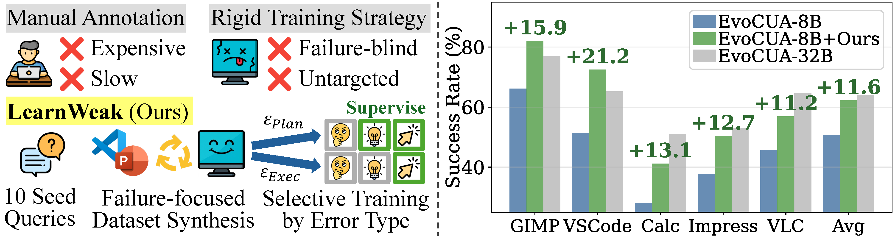
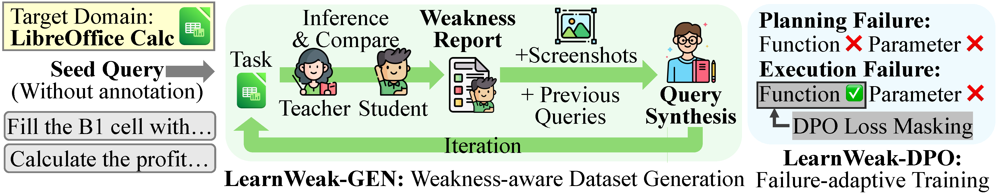
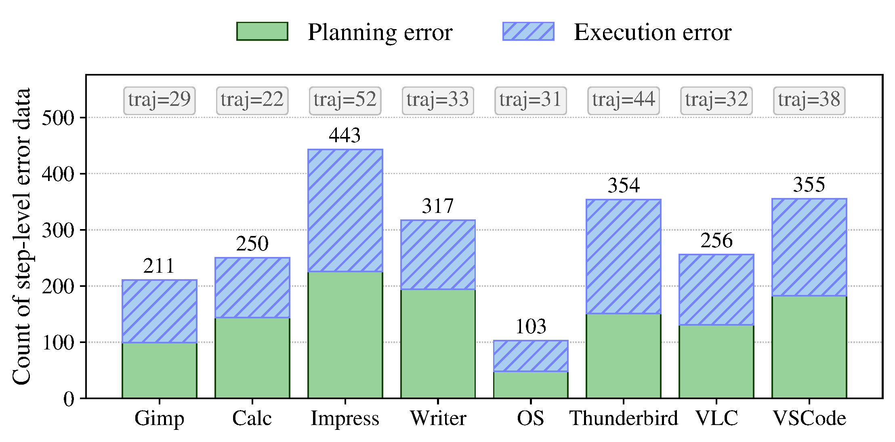
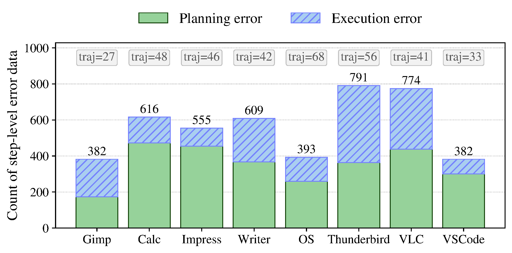
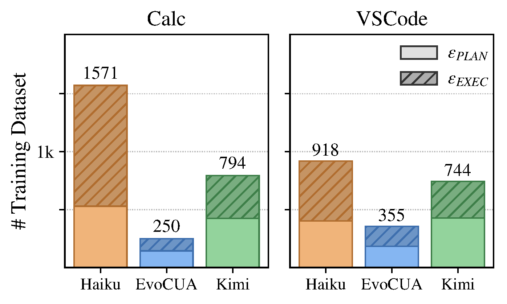
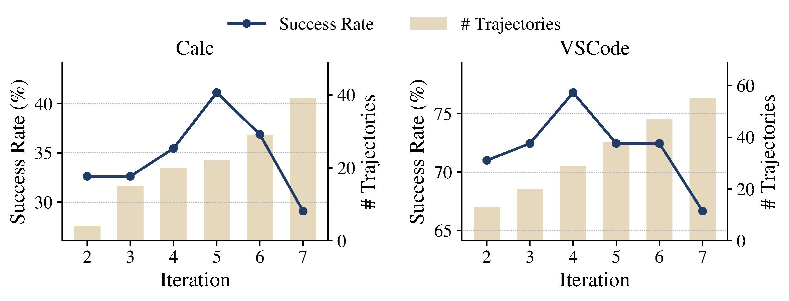

Computer-use agents (CUAs) have recently made substantial progress, but deploying a separate large expert for each software domain remains expensive. Small open CUAs are more practical specialization targets, but they remain substantially weaker and exhibit uneven domain-specific failures. Our key observation is that effective specialization depends less on broad domain coverage than on constructing the supervision the current student actually needs. Building on this observation, we introduce LearnWeak, an annotation-free specialization framework for small CUAs that uses a stronger reference agent to identify the student's weaknesses in the target domain, synthesize targeted tasks, and construct supervision automatically. LearnWeak further introduces an error-aware specialization objective that disentangles planning and execution errors, enabling more behaviorally precise updates than broad uniform supervision. On OSWorld, LearnWeak improves EvoCUA-8B by 11.0% and OpenCUA-7B by 11.1% on average across eight domains. We also validate that our student-aware dataset generation and training approaches outperform existing autonomous trajectory generation and training baselines. These results suggest that effective specialization is driven not by more data, but by constructing the right data for the student's unresolved failures.

LearnWeak decomposes domain specialization into two coupled stages: LearnWeak-Gen, an annotation-free data generation loop driven by student failures, and LearnWeak-DPO, an error-aware preference optimization that adaptively targets each failure type.

For each target domain, a small set of executable environment configurations and seed tasks is initialized, requiring only about an hour of human effort — no trajectory annotation is needed.
Both teacher and student agents are rolled out on identical tasks. Tasks where the teacher succeeds but the student fails are collected. A verifier produces structured rationales, which are summarized into a weakness report capturing recurring failure modes such as incorrect operation selection or inaccurate element localization.
A task-query generator synthesizes new tasks using two complementary strategies: weakness-focused synthesis, conditioned on the weakness report to target identified deficiencies, and exploration-focused synthesis, which uses screenshots to discover unexplored functionalities. Together they balance targeted repair with domain diversity.
Steps 2–3 are repeated for $N{-}1$ iterations, progressively shifting the generated task distribution toward unresolved student weaknesses. The final dataset $\mathcal{F}^d$ aggregates all teacher-success/student-failure cases across iterations.
For each failed task, the teacher trajectory is replayed step by step. At each step the student policy is queried under the teacher's context. Steps where teacher and student produce differing tool executions form preference pairs $(c_t^T, a_t^T, \hat{a}_t^S)$.
Each preference pair is categorized into one of two error types:
• Planning-level error ($\epsilon_\text{PLAN}$): teacher and student choose different action types (e.g., click vs. type).
• Execution-level error ($\epsilon_\text{EXEC}$): same action type but different parameters (e.g., wrong coordinates).
A binary mask $m$ determines which token positions receive gradient updates. Reasoning traces are always excluded to preserve pretrained reasoning. Action descriptions are supervised only for planning-level errors; tool executions are always supervised. This focuses training on the precise failure site rather than uniformly relearning full responses.
Domain-specific knowledge is encoded in lightweight LoRA adapters $\{\Delta_d\}$. The base student $\pi_S$ is shared across all domains, and the domain-specific adapter is activated at deployment time: $\hat{\pi}_S^d = \pi_S \oplus \Delta_d$.
OSWorld — covering 8 diverse software domains: Gimp Calc Impress Writer OS Thunderbird VLC VSCode
EvoCUA-8B and OpenCUA-7B as the small CUAs to be specialized.
EvoCUA-32B as the stronger reference agent used for data construction.
LearnWeak yields consistent improvements across all eight domains for both student models. Yellow row: teacher policy (EvoCUA-32B). Blue rows: LearnWeak-specialized students. Results reported as mean success rate (%) over three trials.
| Model | Gimp | Calc | Impress | Writer | OS | Thunderbird | VLC | VSCode | Avg. |
|---|---|---|---|---|---|---|---|---|---|
| Generalized Models | |||||||||
| Kimi K2.6 | 73.08 | 80.85 | 82.19 | 73.91 | 79.17 | 80.00 | 75.71 | 91.30 | 79.53 |
| Claude Sonnet 4.6 | 69.23 | 74.47 | 70.21 | 86.83 | 91.67 | 66.67 | 81.41 | 72.73 | 76.65 |
| Qwen3.5-27B | 39.74 | 22.70 | 43.97 | 52.17 | 41.67 | 66.67 | 44.12 | 47.83 | 44.86 |
| Domain Specialized CUA Models | |||||||||
| SEAgent | 42.30 | — | 22.70 | 31.80 | — | — | 35.30 | 40.50 | — |
| OSExpert | 30.80 | 44.70 | 42.60 | 34.70 | — | — | — | — | — |
| CUA Models | |||||||||
| EvoCUA-32B Teacher | 76.29 | 51.06 | 52.98 | 65.22 | 75.00 | 60.00 | 64.65 | 65.22 | 63.80 |
| OpenCUA-32B | 74.36 | 35.46 | 48.21 | 56.52 | 61.11 | 57.78 | 37.25 | 72.73 | 55.43 |
| EvoCUA-8B | 66.15 | 28.07 | 37.66 | 50.43 | 60.83 | 65.33 | 45.71 | 51.30 | 50.69 |
| EvoCUA-8B + LearnWeak | 82.05 | 41.13 | 50.35 | 55.07 | 66.67 | 73.33 | 58.86 | 72.46 | 62.49 |
| Δ | +15.9 | +13.1 | +12.7 | +4.6 | +5.8 | +8.0 | +11.2 | +21.2 | +11.0 |
| OpenCUA-7B | 48.46 | 11.91 | 31.49 | 30.43 | 40.00 | 54.67 | 32.94 | 51.30 | 37.65 |
| OpenCUA-7B + LearnWeak | 57.69 | 19.15 | 36.88 | 40.58 | 59.42 | 66.67 | 47.06 | 62.32 | 48.72 |
| Δ | +9.2 | +7.2 | +5.4 | +10.2 | +19.4 | +12.0 | +14.1 | +11.0 | +11.1 |
The specialized EvoCUA-8B outperforms the 32B teacher on Gimp, Thunderbird, and VSCode. This suggests that weakness-focused corrective supervision can be more than simple imitation: even when training data is provided by the teacher, the student can use targeted corrections to address its own domain-specific failures and ultimately surpass the teacher.


Comparison of LearnWeak-Gen against existing datasets and alternative autonomous generation pipelines under a matched training budget (EvoCUA-8B student). All results are mean success rate (%) on four OSWorld domains.
| Method | Calc | Impress | VLC | VSCode | Avg. |
|---|---|---|---|---|---|
| Zero-shot | 28.07 | 37.66 | 45.71 | 51.30 | 40.69 |
| Existing Data | |||||
| AgentNet | 34.04 | 39.01 | 49.01 | 69.57 | 47.91 |
| AgentNet (N.) | 32.62 | 40.43 | 49.02 | 63.77 | 46.46 |
| Minimal Human Annotation | |||||
| Trajectory Boosting | 30.50 | 19.88 | 45.10 | 49.28 | 36.19 |
| Zero Human Annotation | |||||
| AgentSynth | 31.21 | 39.01 | 39.22 | 71.01 | 45.11 |
| OS-Genesis | 31.91 | 37.59 | 45.10 | 68.12 | 45.68 |
| ZeroGUI | 36.17 | 40.43 | 48.86 | 62.30 | 46.94 |
| WebSTAR | 31.21 | 40.43 | 52.94 | 73.91 | 49.62 |
| LearnWeak (Ours) | 41.13 | 50.35 | 56.86 | 72.46 | 55.20 |
LearnWeak outperforms all baselines on average, achieving a 5.6% gain over WebSTAR, the strongest prior baseline. Simply reusing existing data (AgentNet) or scaling diverse generation (AgentSynth, OS-Genesis) yields limited gains; weakness-focused generation is the critical factor.
We ablate the key design choices of LearnWeak-Gen: iterative generation and weakness-report conditioning.
Ablation of data-generation pipeline components. Mean success rate (%) on four OSWorld domains.
| Domain Spec. | Iter. Gen. | Weak. Report | Calc | Impress | VLC | VSCode | Avg. |
|---|---|---|---|---|---|---|---|
| ✗ | ✗ | ✗ | 28.07 | 37.66 | 45.71 | 51.30 | 40.69 |
| ✓ | ✗ | ✗ | 34.57 | 39.72 | 47.06 | 73.91 | 48.82 |
| ✓ | ✓ | ✗ | 24.82 | 42.55 | 43.14 | 72.46 | 45.74 |
| ✓ | ✓ | ✓ | 41.13 | 50.35 | 56.86 | 72.46 | 55.20 |
One-shot domain specialization (no iteration) already provides a useful baseline (40.69 → 48.82 avg.). However, adding iteration without the weakness report actually hurts performance (45.74 avg.), showing that exploration-only generation fails to collect effectively targeted training samples. The full pipeline combining iteration with weakness-report conditioning achieves the best result (55.20 avg.), demonstrating that the benefit of iterative expansion depends on student-aware guidance.
Effect of teacher policy choice ($\pi_T$). Both teacher standalone performance and resulting specialized student performance are reported.
| Teacher Policy | Teacher | Specialized Student | ||
|---|---|---|---|---|
| Calc | VSCode | Calc | VSCode | |
| Zero-shot | — | — | 28.07 | 51.30 |
| Claude Haiku 4.6 | 36.17 | 69.60 | 30.50 | 71.01 |
| EvoCUA-32B | 51.06 | 65.22 | 41.13 | 72.46 |
| Kimi K2.5 | 63.83 | 86.96 | 41.13 | 73.91 |
Teacher capability matters mainly because it enables reliable successful trajectories. Once the teacher is strong enough, further improvements depend less on teacher performance and more on whether its supervision addresses the student's specific weaknesses.

To verify that LearnWeak-Gen is truly student-aware, we train each target model on datasets constructed from weakness reports derived from different source students. If the generation pipeline genuinely captures model-specific failures, a model trained on its own weakness-conditioned dataset should outperform one trained on a cross-student dataset.
| Target Model $\pi_\theta$ / Source Student $\pi_S$ | Calc | Impress | VLC | VSCode |
|---|---|---|---|---|
| OpenCUA-7B (target) | ||||
| Zero-shot | 11.91 | 31.49 | 32.94 | 51.30 |
| Source: EvoCUA-8B | 9.93 | 27.54 | 45.10 | 50.72 |
| Source: UI-TARS-1.5-7B | 7.80 | 33.35 | — | 49.28 |
| Source: OpenCUA-7B (own) | 19.15 | 36.88 | 47.06 | 62.32 |
| EvoCUA-8B (target) | ||||
| Zero-shot | 28.07 | 37.66 | 45.71 | 51.30 |
| Source: UI-TARS-1.5-7B | 22.70 | 31.21 | — | 71.01 |
| Source: OpenCUA-7B | 39.01 | 43.26 | 47.06 | 73.91 |
| Source: EvoCUA-8B (own) | 41.13 | 50.35 | 56.86 | 72.46 |
Both models achieve the highest performance when trained on datasets generated from their own failure cases, while cross-student datasets yield consistently lower gains. This confirms that LearnWeak-Gen captures model-specific deficiencies rather than generic task distributions.
We compare LearnWeak-DPO with standard SFT, DPO, and variants with different error-aware supervision masks, all trained on the same dataset from LearnWeak-Gen.
| Method | Calc | Impress | VLC | VSCode | Avg. |
|---|---|---|---|---|---|
| Zero-shot | 28.07 | 37.66 | 45.71 | 51.30 | 40.69 |
| SFT | |||||
| Standard SFT ($m = \varnothing$) | 29.08 | 39.72 | 45.10 | 68.12 | 45.51 |
| LearnWeak-SFT | 34.04 | 46.81 | 45.10 | 69.57 | 48.88 |
| DPO | |||||
| Standard DPO ($m = \varnothing$) | 27.66 | 40.43 | 49.02 | 65.22 | 45.58 |
| DPO, planning-only mask | 18.44 | 17.02 | 41.18 | 63.77 | 35.10 |
| DPO, execution-only mask | 24.82 | 39.72 | 45.10 | 71.01 | 45.16 |
| LearnWeak-DPO (Ours) | 41.13 | 50.35 | 56.86 | 72.46 | 55.20 |
Full-response optimization (standard SFT/DPO) improves only modestly. Error-aware masking consistently improves SFT, and LearnWeak-DPO outperforms standard DPO by 9.62 points on average. Using only planning-level or only execution-level supervision is insufficient — effective specialization requires both.

We study domain specialization for small computer-use agents in a fully automated setting. The central idea of LearnWeak is that, for specialization, the most useful supervision is not broad domain coverage but the subset of tasks that exposes the current student's actual weaknesses.
Based on this view, we propose a two-stage framework: LearnWeak-Gen, which iteratively constructs a weakness-aware domain dataset through teacher-student comparison and screenshot-grounded query synthesis, and LearnWeak-DPO, which converts the resulting teacher-success/student-failure cases into step-level preference supervision with error-aware masking.
Results show that this targeted specialization strategy substantially improves small CUAs across diverse software domains and outperforms alternative data-construction approaches. The gains support our claim that efficient specialization depends on identifying and repairing student-specific weaknesses rather than simply scaling synthetic data. Our results further suggest that automated domain specialization can narrow the gap between small open CUAs and much larger agents without requiring human trajectory annotation, making small specialized agents a more practical deployment path for real-world software environments.